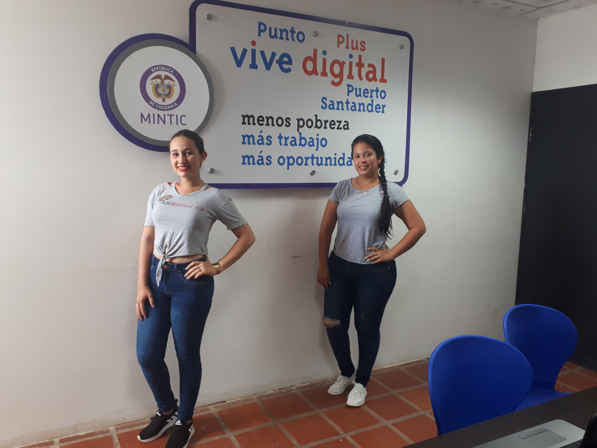
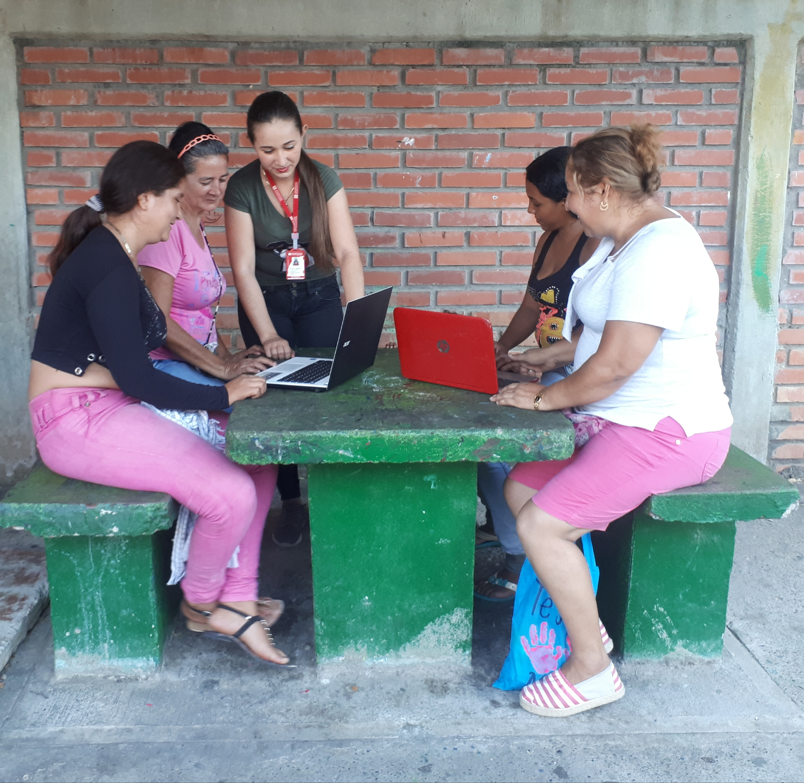

Actividades rectoras
Menu
Inicio
Nosotros
Aprende enseña y diviértete
educando con las actividades rectoras.

¿Qué son las actividades rectoras?
El juego, el arte, la literatura y la exploración del medio son las actividades rectoras de la primera infancia, mediante las cuales se aplican técnicas pedagógicas para una correcta formación estudiantil.

Actividad rectora - El juego
El juego es una experiencia siempre creadora, y es una experiencia en el continuo espacio-tiempo. Una forma básica de vida.
Actividad rectora - El arte
Observar las rondas y los juegos de tradición oral permite constatar cómo la literatura, la música, la acción dramática, la coreografía y el movimiento se conjugan.
Actividad rectora - La literatura
La necesidad de construir sentido, inherente a la condición humana impulsa desde la más temprana infancia a trabajar con las palabras para habitar mundos posibles y para operar con contenidos invisibles.
Actividad rectora - Exploración Del Medio
La necesidad de construir sentido, inherente a la condición humana impulsa desde la más temprana infancia a trabajar con las palabras para habitar mundos posibles y para operar con contenidos invisibles.
Material en línea
Podemos encontrar en la web muchos juegos que nos sirvan de apoyo para estimular las distintas habilidades de los niños.